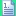
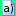
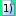
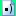
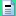

Inserimento delle partizioni “Articolo” (successivi al primo), “Comma”, “Lettera”, “Numero”
Per inserire altre partizioni di testo all'interno dell'articolato, ovvero la rubrica (in caso non fosse già presente), articoli successivi al primo, nuovi commi, lettere o numeri, occorre eseguire le seguenti operazioni:
1. posizionarsi sulla partizione che si intende inserire;
2. cliccare sugli appositi pulsanti della Barra degli strumenti, ovvero Inserisci un nuovo "Articolo",  Inserisci un nuovo "Comma",  Inserisci una nuova "Lettera",  Inserisci un nuovo "Numero",  Inserisci un nuovo "Punto" (ATTENZIONE: questa funzione non è ammessa in caso si sia optato per la DTD Completa),  Inserisci una nuova "Rubrica".